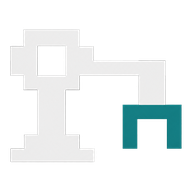
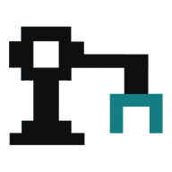
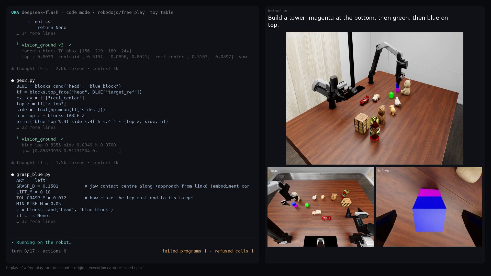
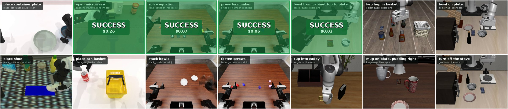

ORA
Open models operate robots. Zero-shot.
ORA is an open harness for robot use. The model looks, reasons and writes programs; a supervisor admits every motion; every run is sealed and can be replayed.
A free-play session in code mode, replayed from its records: the operator asks for a tower and changes the order halfway. Left, the programs the agent writes and what comes back; right, the cameras. DeepSeek-V4.1-Flash, RoboDojo toy table, unscored.
TL;DROpen, cheap and always in the loop
GPT-6 Astra driving a robot is cool. A lab still needs an agent that is open, cheap and always in the loop. That is ORA.
Open weights are enough. Self-hosted DeepSeek-V4.1-Flash on LIBERO-Pro, zero-shot. No VLA, no robot training.
Cheap. 6–7× fewer tokens per success than Uni-Robot-Agent, same model and tasks; code mode saves about 40% more.
The agent stays in the loop. It reads every result and re-plans; one loop runs five benchmarks and a real arm.
Close to a trained VLA. RPent with its π0.5 VLA and task memory: 93.4%, same model and tasks.
ResultsZero-shot, on RPent's case lists
ORA in code mode against published systems, on the cases of RPent's leaderboard.
RoboTwin C2R
LIBERO-Pro
ORA, zero-shotRPent: LLM + VLA + task memoryVLA trained on demonstrations
Same model (DeepSeek-V4.1-Flash), same tasks
Success, higher is better
LIBERO-Pro (Task + Swap)
RoboLab
RoboDojo
Prompt tokens per success, lower is better
LIBERO-Pro (Task + Swap)
RoboLab
RoboDojo
ORA, code modeORA, tool callsthe other system, same modelRPent exploration, per success
Leaderboard rows other than ORA: RPent's published leaderboard (snapshot of 2026-09-22). ORA: 235 of RPent's 250 RoboTwin cases; LIBERO-Pro Task + Swap, initial states 0–4. Same-model comparisons: the cases both systems finished (LIBERO-Pro 391, RoboLab 177, RoboDojo 72); every success counts, with no simulator step limit for either system; tokens in millions, failures included. How we count.
MethodHow ORA works
The model looks, acts, reads the result and decides again. ORA supplies three things around it.
- thinkan open-weight language model
- acttool calls or programs
- ORA harnessadmits each motion, runs it, writes the receipt
- robotsimulation or a real arm
- observeRGB-D views, poses, gripper, receipt
Prompt bundle
What the robot is and what success means.
- embodiment
- environment
- task instruction
- success criteria
- tools
Tool suite
Every result is a measurement or a receipt.
- look
- measure
- compute
- act
- code
Context management
Recent turns in full, older ones by reference; the model can reopen any of them.
- recent turns
- references
- reopen by reference
Two ways to act, same tools
With tool calls the agent makes one call per turn. In code mode it writes one program per turn against the same tools, keeps what it measured, and checks its own work. ORA in code mode has the comparison.
Tool callsone tool per turn
turn 1vision_ground("green block")
└ obs: candidates · metres
turn 2grasp_plan("T1")
└ obs: 3 grasps · reachable
turn 3grasp_execute("g0")
└ obs: held · lifted 30 mm
turn 4move_pose({...hover})
└ obs: reached · views
turn 5set_gripper(open)
└ obs: released · viewsCode modeone program per turn
turn 1# measure.py: its own tool def top(ref): t = cloud(ref); z = t[:, 2] return t[z > z.max()-.01].mean(0) └ obs: kept in /work for later turn 2# place1.py t = measure.top(blue) hover = p0 + t - g.bottom + .05 if not reach(hover): handoff() r = move_pose(hover) if miss(r) > .012: handoff() └ obs: miss 2 mm · re-check
Run it
One harness for RoboTwin, LIBERO-Pro, RoboDojo, RoboLab and a real arm, with any OpenAI-compatible or Anthropic model.
curl -fsSL https://raw.githubusercontent.com/hao-ai-lab/ORA/main/scripts/install.sh | sh
ora providers key DEEPSEEK_LOW_API_KEY # any OpenAI-compatible or Anthropic endpoint ora play --env synthetic # no GPU: give a robot instructions
ora setup --env robodojo # simulator, assets, sandbox ora run --env robodojo --task general_pickup --confirm-launch
ORA in the blog
All posts
Robot-use agents can write code now
Code mode lets the agent write and run programs against the same harness: DeepSeek-V4.1-Flash solves 40% of RoboDojo zero-shot, without exploration. How agents behave with code, the tools they build for themselves, and three open models in both modes.

: Open Robot-Use Agents
An open robot-use harness that connects open-weight language models to robots through perception and motion tools, with no VLA and no robot training.